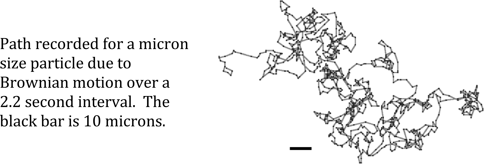
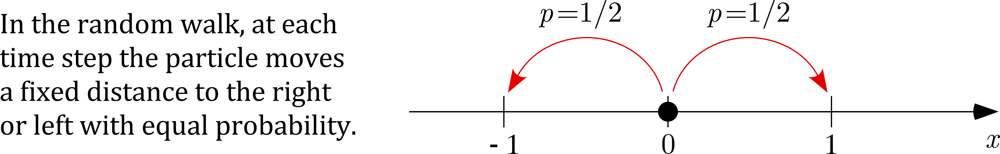

Diffusion Equation, Random Walks, and Einstein

Video obtained in the original experiment. Reference: "Measurement of the Translational and Rotational Brownian Motion of Individual Particles in a Rarefied Gas," by J. Blum, et al, Physical Review Letters (2006).
Brownian Motion and Random Walks
This is the random motion observed with particles suspended in a fluid. In Brown's original experiment, he saw that pollen granules suspended in water were in constant motion, never appearing to slow or stop, and following irregular paths (similar to the one shown above). What is happening is that the granules, which are approximately 2 microns in length, are under constant bombardment by the surrounding water molecules. Although the latter are much smaller, having a diameter of approximately 3 x 10^{-4} microns, there are many of them and they are responsible for a very large number of random impacts on each granule. The irregular nature of this forcing gives rise to the randomness of the motion. There are many online videos showing this, and a couple of examples are:
Question: If you start out with a group of particles, where each one follows a random path similar to the one above, how does the spatial distribution of the group change over time?
Answer (due to Einstein): If the particles move back and forth along the x-axis, and each time that a particle jumps it is equally likely to go left or right, then the concentration of the particles is determined by the diffusion equation. So, if u(x,t) is the concentration of particles at x and time t, then Du_xx = u_t.

Video proof of Einstein's answer
The video starts out with 1000 particles located at x=0. At each time step, each particle jumps to the left or right with equal probability. So, at t=1 there are about 500 particles at x=-1 and another 500 at x=1. At t=2 there are about 500 particles at x=0 and 250 at x=-2 and at x=2. The locations of the particles are shown in the upper figure in the video. In the lower plot the number per bin is shown along with the corresponding solution of the diffusion equation. It is seen that except at the very beginning (i.e., t near 0) that u(x,t) provides a good approximation of the number of particles at each location, as predicted by Einstein.
The video is HERE. Left click: to stream video, Right click: to download video. Suggestion: use the slider at the bottom to manually progress the video (versus just letting it run at its own speed).
Extras
Einstein's paper: The paper is HERE. Some highlights in the paper are: the ideal gas law on page 550, Taylor's theorem on page 557, and the diffusion equation on page 558 (it is the only equation that is numbered in the paper). The solution is also given on page 558.
Make your Own Video: the MATLAB code used to create this video is HERE. You will need to modify the location of the video file on line 6. You will also need to download 2 other MATLAB files, located HERE and HERE.
References
Introduction to the Foundations of Applied Mathematics, 2nd Edition by Mark H. Holmes (Springer, ISBN 978-3-030-24260-2). Chapter 4 explores the connections between random walks and the diffusion equation, and derives some of the solutions that are obtained from these connections.
Asymmetric random walks and drift-diffusion by M. Holmes (Europhysics Letters, Vol 102, Num 3, DOI 10.1209/0295-5075/102/30005). Extends Einstein's approach to the case of when the probability of jumping left is not necessarily equal to the probability of jumpting right.